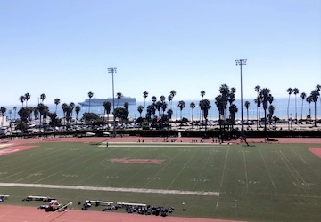

Welcome to My Site
IST 263 Individual Project


Image Above: Santa Barbara City College Track & Field
Fun Fact: Had I not made the decision to attend college at Syracuse University, I would have gone to Santa Barbara City College. Santa Barbara City College has been named No. 1 in the Top 50 Best Value Community Colleges in the nation for 2018!
My Mission
What I want to share...
Explore my website to discover great places to dine, relax and unwind. There are many beaches located throughout different points in the town. Each beach has their own unique qualities. Santa Barbara also attract millions of tourists every year, many being celebrities looking for a place to getaway for a peaceful weekend. Explore the site and maybe you'll find yourself visiting my town soon!